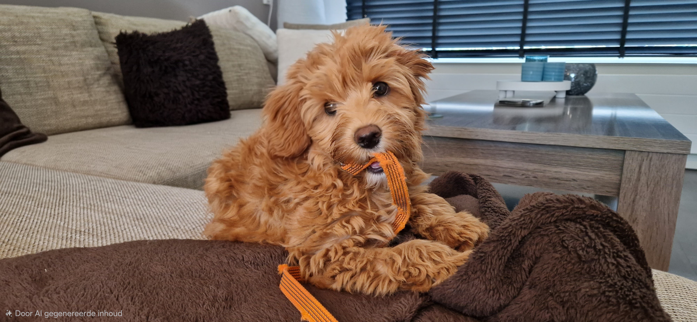

Australian Labradoodles
Liefdevol grootgebracht in huiselijke kring met aandacht voor gezondheid, socialisatie en karakter.
Meer info
DoodleStars - 100% Australian Labradoodle, 100% onweerstaanbaar
Wij, Ricardo en Saskia, zijn de bevoorrechte mensen die wonen in de prachtige Jalon Vallei in de Costa Blanca samen met onze lieve Australian Labradoodle Mila.
Omdat we zoveel liefde, vriendschap en blijdschap ontvangen van onze Mila hebben we besloten een nestje te doen met haar, zodat nog meer mensen kunnen genieten van zo'n fantastisch extra gezinslid op 4 pootjes.
Onze lieftallige Mila is een volwaardig gezinslid en zo zal de reis van haar puppy's in huiselijke kring beginnen. Hier groeien ze op met alle liefde en aandacht die ze nodig hebben.
Wij houden ons aan de richtlijnen van de WALA. De Worldwide Australian Labradoodle Association is een internationale Labradoodle-rasvereniging die waakt over ethiek, gezondheid, vacht, temperament en structuur van het ras.
Tegen de tijd dat de pups mogen verhuizen, hebben ze hun eerste inentingen en ontwormingskuren gehad. Ook zijn ze gechipt en door de dierenarts volledig medisch gekeurd.
Al deze gegevens vind je overzichtelijk terug in hun Europees Dierenpaspoort, dat officieel gekoppeld is aan het chipnummer.
Mila is voor ons een volwaardig gezinslid. Haar lieve karakter, zachte uitstraling en vrolijke energie vormen de basis van DoodleStars.
Met haar toekomstige nestje willen we andere gezinnen laten kennismaken met dezelfde liefde, vriendschap en blijdschap die wij dagelijks van haar mogen ontvangen.
Vraag meer informatieDe informatie over prijzen wordt binnenkort verder aangevuld. Wil je alvast meer weten over toekomstige pupjes of onze werkwijze? Neem dan gerust contact met ons op.
Contact opnemenWij vinden het belangrijk dat toekomstige baasjes goed geinformeerd worden. Daarom begeleiden we het proces stap voor stap: van eerste kennismaking tot plaatsing en nazorg.
Wij verkopen onze puppy's onder een castratie- of sterilisatieplicht. Dit betekent dat de hond voor de 18e levensmaand geholpen dient te worden.
Na ontvangst van het medische bewijs van de dierenarts sturen wij de officiele stamboom van de hond direct naar je op.
Stel je vraagInformatie over gastgezinnen wordt binnenkort verder uitgewerkt. Heb je interesse of wil je hier meer over weten? Neem gerust contact met ons op.
Meer wetenWil je interesse tonen in een toekomstig nestje van Mila? Dan kun je contact met ons opnemen. We bekijken graag samen of er een mooie match is.
Aanvragen en inschrijvingen verlopen via het contactformulier.
Aanvraag indienenLiefdevol grootgebracht in huiselijke kring met aandacht voor gezondheid, socialisatie en karakter.
Meer infoInformatie over opvang van Australian Labradoodles en aanverwante rassen volgt binnenkort.
Vraag infoVerzorging van doodles en aanverwante rassen. Details worden later verder aangevuld.
ContactMeer weten over DoodleStars, toekomstige pupjes of onze andere diensten? Neem dan contact met ons op.
Meer weten over DoodleStars of toekomstige pupjes?
Neem dan contact met ons op en we helpen je met veel plezier.